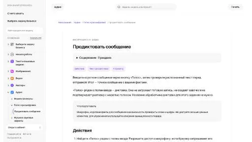
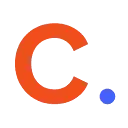

W
WhisperUIАудио (голос и музыка)
«WhisperUI» преобразует речевую запись в письменный материал.
Раздел «Речь → текст»: варианты ИИ для этой задачи, описания возможностей и переходы к обзорам. Сравните несколько решений на одинаковом примере.
В Молекуле можно ввести короткое сообщение через кнопку «Голос». Проверьте распознанные слова и числа перед отправкой, затем используйте уточнённый текст для рабочего задания.
По моей диктовке подготовь краткое описание товара. Сохрани количество деталей и материал, цену оставь неизвестной. Перед отправкой я сверю распознанный текст со своими словами.

«WhisperUI» преобразует речевую запись в письменный материал.
«YouTube Transcript» создаёт видеоматериал по заданию. Дополнительно «YouTube Transcript» помогает подготовить персонализированный видеоматериал.
«EchoScribe» помогает упорядочить рабочие заметки.
Сравнивать «HoneyDo» с другими инструментами раздела «Продуктивность» удобнее на одинаковом исходном материале.
Для «Laxis» сначала определите свою задачу и требуемый результат. Карточка относится к направлению «Данные и аналитика».
Podium помогает авторам подкастов подготавливать материалы по выпуску с помощью ИИ. Инструмент создаёт расшифровки и главы, а также фрагменты и публикации для соцсетей. Генерация ключевых слов дополняет работу с содержанием, связывая исходную запись и сопроводительный контент для слушателей.
«Speak Ai (speakai.co)» преобразует речевую запись в письменный материал. «Speak Ai (speakai.co)» также разбирает данные для рабочего анализа.
«Supernormal» помогает соединить повторяемые рабочие действия.
«Superpowered» преобразует речевую запись в письменный материал. Дополнительно «Superpowered» помогает упорядочить рабочие заметки.
Transcriptal переводит речь из YouTube-видео в текст с помощью ИИ. Поддержка разных языков дополнена созданием краткого содержания. Инструмент предназначен для работы с содержимым ролика в письменном виде, где полная расшифровка и сводка решают разные задачи: чтение отдельных реплик и знакомство с основными темами материала.
Transkriptor преобразует аудио и видео в текст и поддерживает перевод на разные языки. Сервис подготавливает заметки встреч и предоставляет совместное редактирование документов. ИИ-помощник отвечает на вопросы по записи, связывая расшифрованное содержание с дальнейшей работой команды над материалами обсуждения.
«Whisper OpenAI» преобразует речевую запись в письменный материал.
Сравнивать «Ланда» с другими инструментами раздела «Анализ данных» удобнее на одинаковом исходном материале.
«Actual Chat» преобразует речевую запись в письменный материал.
«Audioscribe» преобразует речевую запись в письменный материал. Дополнительно «Audioscribe» помогает упорядочить рабочие заметки.

В инструменте «Circleback» можно готовить ответы на обращения клиентов. Ещё одно направление работы: превращать материалы в рабочие заметки.
Сравнивать «Dolores» с другими инструментами раздела «Чат-боты и ассистенты» удобнее на одинаковом исходном материале.
«Lexi App» представлен в разделе «Продуктивность». При выборе проверьте нужную операцию и условия работы с результатом.
RecCloud объединяет средства работы с аудио и видеоматериалами. В набор входят субтитры, расшифровка речи, отделение голоса от музыки и краткий разбор видео с ИИ. Перевод, облачное хранение и инструменты редактирования дополняют обработку, связывая извлечение содержимого с организацией и дальнейшей подготовкой медиафайлов.
«SpeechFlow» преобразует речевую запись в письменный материал.
Vocapia преобразует речь в текст из аудио и видеодокументов. Программный пакет работает с разными языками и предлагает веб-сервисы. Анализ телефонной речи и подготовка видеосубтитров дополняют транскрибирование, связывая исходную запись с дальнейшим использованием её письменного содержания в выбранном процессе пользователя.
«Voice to Text» преобразует речевую запись в письменный материал. «Voice to Text» помогает упорядочить рабочие заметки.
«Голосовые сообщения TG» представлен в разделе «Русские». При выборе проверьте нужную операцию и условия работы с результатом.
«Airgram» преобразует речевую запись в письменный материал.
«AnthemScore by Lunaverus» преобразует речевую запись в письменный материал.
AssemblyAI предоставляет API для распознавания записанной и потоковой речи. Подходит разработчикам, которые добавляют транскрибацию и обработку речевых данных в свой продукт.
«Beesly AI» представлен в разделе «ИИ-ассистент». При выборе проверьте нужную операцию и условия работы с результатом.
«Big Speak» позволяет создавать воспроизведение голоса. «Big Speak» также преобразует речевую запись в письменный материал.
«Bluedot» помогает упорядочить рабочие заметки.
Для «BrainTalk AI» сначала определите свою задачу и требуемый результат. Карточка относится к направлению «Чат-боты и ассистенты».
«Charla» преобразует речевую запись в письменный материал.
«Cockatoo» преобразует речевую запись в письменный материал. «Cockatoo» работает с текстом субтитров.
«HiNotes» преобразует речевую запись в письменный материал.
«Paxo» помогает упорядочить рабочие заметки.
«Rewatch AI» представлен в разделе «Суммаризация». При выборе проверьте нужную операцию и условия работы с результатом.
«Speechnotes» преобразует речевую запись в письменный материал.
Для «Spoke» сначала определите свою задачу и требуемый результат. Карточка относится к направлению «Продуктивность».
tl;dv работает с видеовстречами в Google Meet и Zoom, записывая разговоры и создавая расшифровки. Предусмотрены перевод и краткие заметки по обсуждению. Инструмент предназначен для переноса содержимого звонка в текстовый материал, который можно использовать вместе с записью для дальнейшего разбора договорённостей.
«Vocalo» преобразует речевую запись в письменный материал. Дополнительно «Vocalo» помогает изучать выбранный язык.
Для «VS Robotics» сначала определите свою задачу и требуемый результат. Карточка относится к направлению «Анализ данных».
ByteCap добавляет настраиваемые субтитры к видео, используя автоматическое распознавание речи. Инструмент предназначен для получения текстового сопровождения, которое затем оформляется под выбранный ролик. При подготовке публикации важно сравнивать распознанные слова с исходным звуком, поскольку заявленная точность не подтверждает правильность каждой конкретной реплики и имени.
«Good Tape» преобразует речевую запись в письменный материал.
MonAi помогает записывать расходы через голосовые сообщения и распределять записи по категориям. В исходном описании также указаны хранение в iCloud и совместный обмен. На нескольких операциях проверьте сумму, валюту и выбранную категорию; отдельно настройте, какие записи могут видеть другие участники и где сохраняются данные.
Parrot AI помогает записывать, расшифровывать и сохранять встречи, проводимые в Zoom, Teams и Meet. Полученные материалы можно использовать для возвращения к обсуждениям команды. После встречи сверяйте решения, имена и сроки с исходной записью; заранее уточните согласие участников и правила доступа к сохранённому разговору.
«Speechmatics Flow» преобразует речевую запись в письменный материал.
«SubTitles.Love» создаёт видеоматериал по заданию. «SubTitles.Love» также работает с текстом субтитров.
«TranscribeMe» преобразует речевую запись в письменный материал. Дополнительно «TranscribeMe» помогает упорядочить рабочие заметки.
«VOMO AI» подготавливает сжатое изложение исходного содержания.
Страница 2 из 3